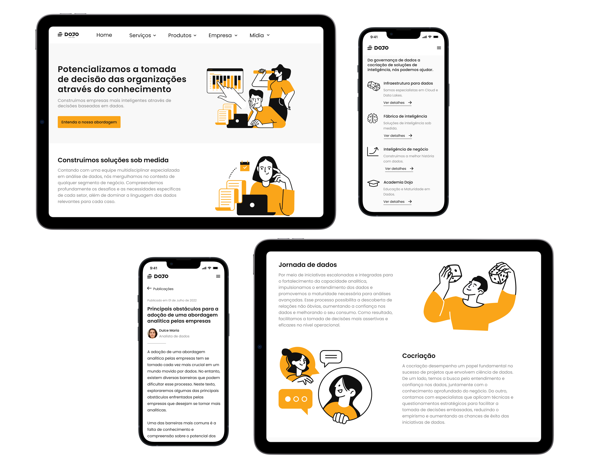
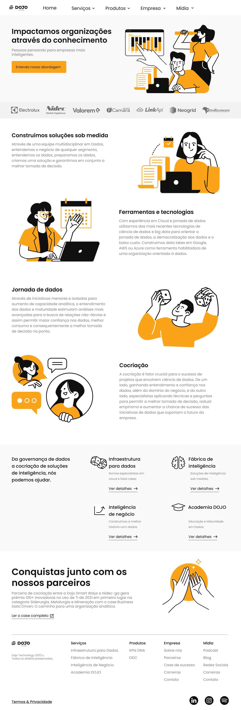
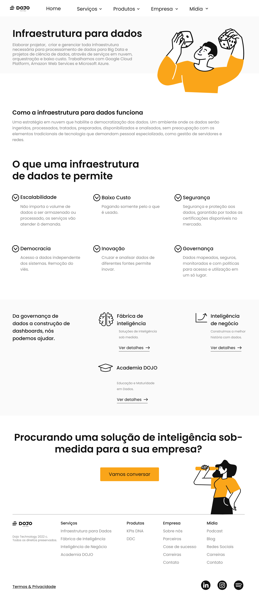
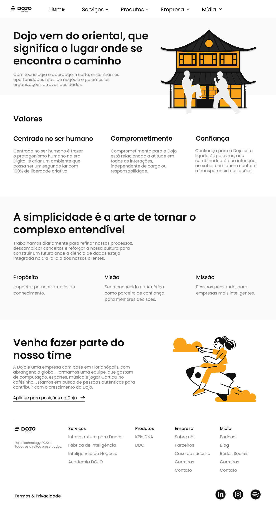

Dojo: Redesign do Site da Empresa
O site da Dojo não tinha acompanhado o crescimento da empresa. Conduzi uma avaliação heurística e uma análise competitiva, e reconstruí o site de ponta a ponta (pesquisa, UI e código front-end), alcançando um aumento de 486% no tráfego orgânico.
Visão Geral
A Dojo tinha crescido além do próprio site. Conforme a empresa escalava, o branding do site já não correspondia mais ao negócio, e partes de sua usabilidade não se sustentavam diante de diretrizes heurísticas básicas. Fui responsável pelo redesign de ponta a ponta (pesquisa, design UI/UX e implementação front-end), com o objetivo de dar à Dojo um site tão maduro e estabelecido quanto a empresa realmente havia se tornado.
O Problema
O site tinha dois problemas separados e entrelaçados: uma lacuna de branding (uma empresa em crescimento ainda se apresentando como em um estágio muito anterior), e uma lacuna de usabilidade, em que partes da interface violavam silenciosamente diretrizes heurísticas padrão sem que ninguém tivesse medido exatamente onde ou por quê.
Pesquisa e Discovery
Comecei com uma avaliação heurística do site existente, trabalhando com outras três pessoas que conheciam bem as diretrizes de usabilidade heurística para capturar o que eu sozinha poderia deixar passar. Isso me deu uma lista concreta de problemas de usabilidade a não repetir no novo design, em vez de depender de intuição.

Em paralelo, mapeei e analisei os concorrentes no mesmo mercado, como eles se aproximavam dos clientes, quais funcionalidades tinham construído que a Dojo não tinha, e, tão útil quanto isso, o que deliberadamente haviam deixado de fora.
Tratei a pesquisa como algo contínuo, não uma etapa única, lendo material sobre processo de web design ao longo do projeto para colocar minhas próprias decisões à prova, em vez de projetar no vácuo.
Design Iterativo
As descobertas da avaliação heurística e da pesquisa competitiva apontaram correções específicas de usabilidade. Comecei pelo user flow para dimensionar quantas páginas o novo site realmente precisava, e então avancei para wireframes construídos em torno de um pequeno conjunto de estruturas reutilizáveis, os mesmos padrões de layout repetidos entre páginas para manter o desenvolvimento rápido e a experiência consistente.
Cada página wireframada foi apresentada à equipe como um protótipo de média fidelidade antes de qualquer design visual começar, especificamente para capturar expectativas desalinhadas cedo, em vez de depois que o site já parecesse pronto.

Depois que essa estrutura foi validada, levei o design à alta fidelidade (cor, imagens e textos), e então fiz uma segunda rodada de validação com a equipe sobre o design visual finalizado, antes de seguir para o desenvolvimento.



Também construí o site sozinha, codificando em AngularJS, Tailwind e Node.js e publicando via Google Cloud, sem handoff de design para engenharia, porque não havia um engenheiro separado para receber o trabalho.
Testes e Solução
A validação aconteceu em dois checkpoints, não em um só: os protótipos de média fidelidade foram revisados com a equipe antes de eu tocar em cor ou imagens, e o design de alta fidelidade finalizado passou por uma segunda rodada de revisão da equipe antes de o desenvolvimento começar. Capturar desalinhamentos em qualquer um dos dois pontos era muito mais barato do que capturá-los depois que o site fosse ao ar.
Impacto e Aprendizados
- Comparando o mesmo período antes e depois do lançamento, o site redesenhado gerou um aumento de 486% em visitas orgânicas, tudo vindo de busca, não de tráfego pago ou de referência.
- Tags de SEO incorporadas ao código desde o início fizeram com que o site passasse a aparecer consistentemente no topo dos resultados de busca pelo nome da empresa, o que não acontecia com o site antigo.
- Enquanto os concorrentes que analisei pendiam para um visual corporativo e mais sóbrio, escolhi deliberadamente uma linguagem visual mais colorida e arredondada, uma aposta de que uma sensação mais leve e lúdica tornaria um tema genuinamente complexo como ciência de dados mais fácil de abordar, sem comprometer a credibilidade da Dojo.
Principal aprendizado: A avaliação heurística foi o que transformou “o site parece datado” em uma lista corrigível e priorizada, em vez de uma impressão vaga. Combinar isso com pesquisa competitiva de verdade significou que cada decisão visual (incluindo a escolha de parecer menos corporativa do que todo mundo no mercado) foi tomada de propósito, não por padrão.